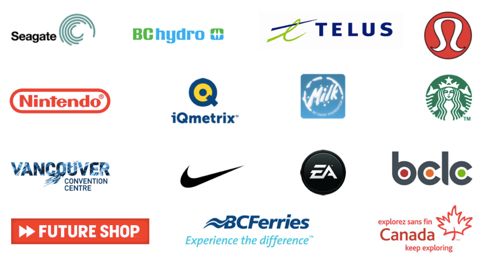
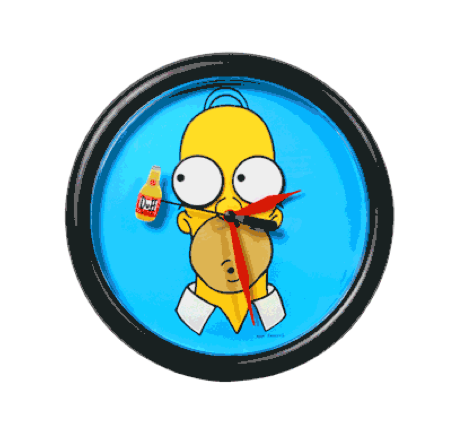
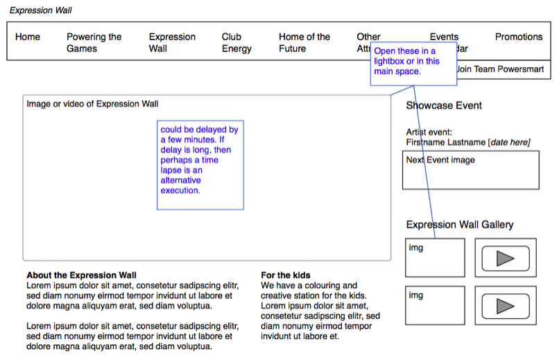
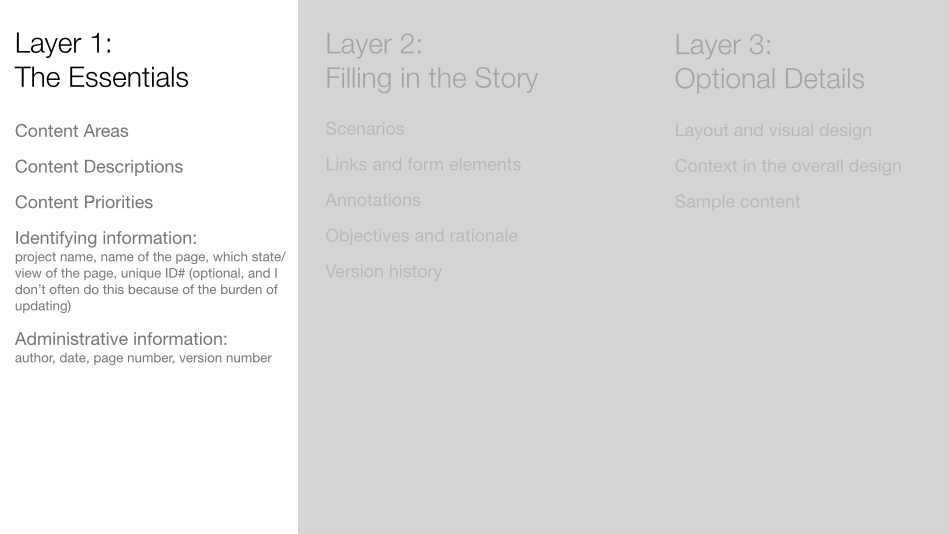
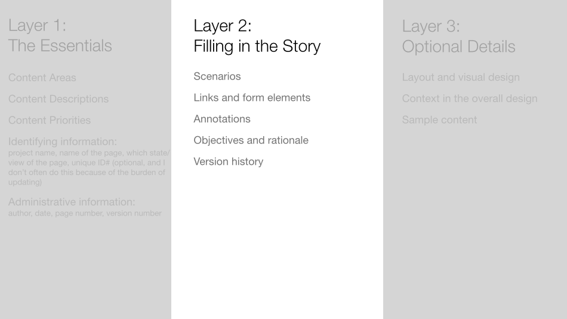
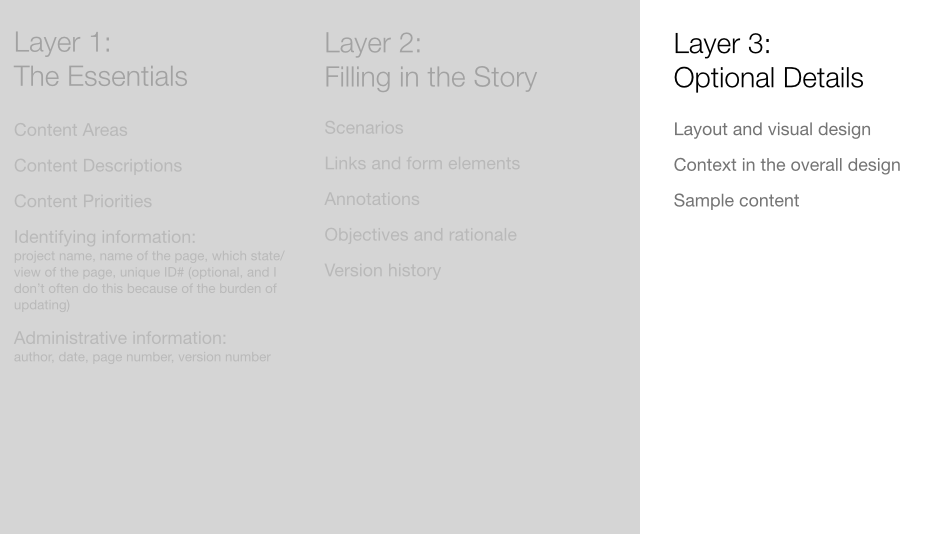
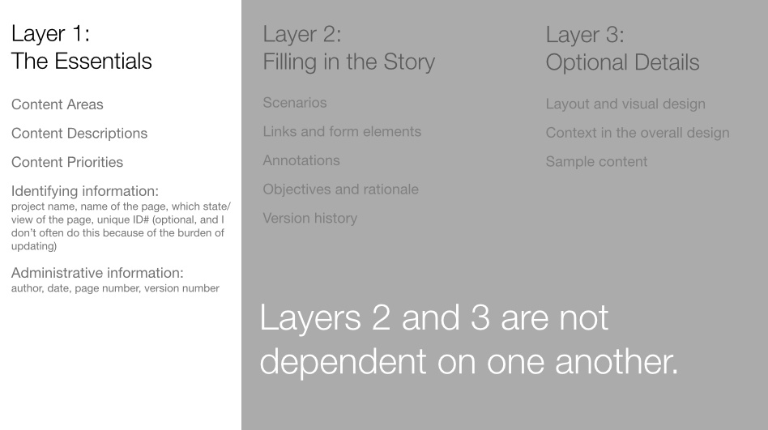
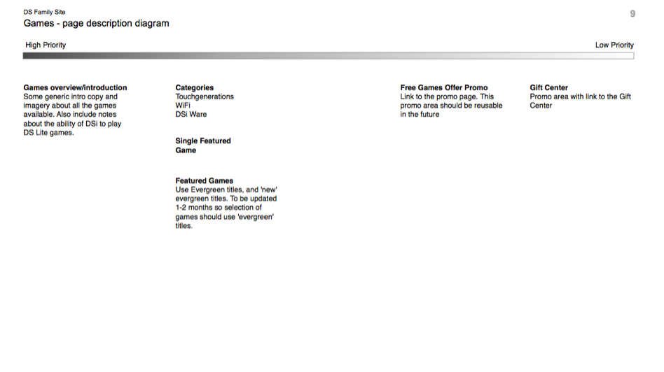
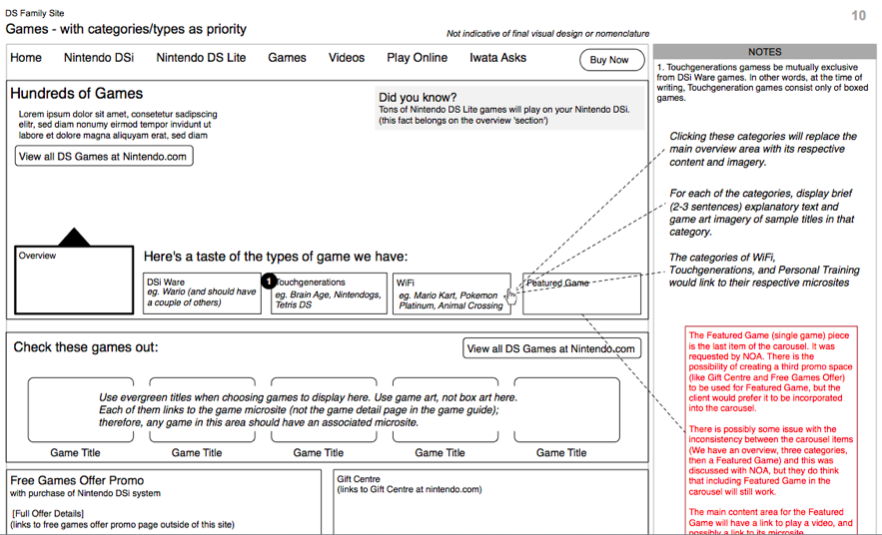

This is a User Experience (UX) Course
This material is meant to teach the practice of being a user experience professional as I see it. It's meant to cover the basic theories that are core to the profession. There are sections which explain the documents that are normally produced by UX professionals. I have stayed away from specific tools because you should focus more on the core concepts first.
I hope to continually refine what you see here in order to make it more timely, more useful, and more practical. Some links and videos might be broken. Let me know if you see something that confuses you, or that you disagree with completely - it makes for a great discussion over coffee or a beer.
I enjoy teaching this material, and I hope you get something out of it too.
Introduction and Expectations
Who are you?

Who am I?
Enough about you; let's talk about me. My career looks like this: Human Resources — IT — Blast Radius — Startup — Freelance (Teaching) — iQmetrix (Teaching). I have been in the web industry since 2000. I have worked for clients such as...

What do you expect from this material?
Do you have great expectations?
What do I expect you to get out of it?
We are here to learn about the field of user experience. We will learn how to gather and analyze some information. We will use tools to organize it all. Then we'll create digital design documents to plan what and how to build our digital experiences. Oh, and it's mostly for websites. But not always.
We can make it even simpler...
How are going to suck less? By looking at a lot of user experiences.

What should you expect from me?
I will aim to deliver the material in a clear, and informative way. When explaining a concept, I will always try to pull in my experience in the industry, or I will reference the experiences of others (including yourselves). This material is not theoretical - it is applied. And the best way to teach applied material, in my opinion, is to tell stories from the working world.
I will aim to be available to answer questions not only when we are together, but in virtual space too. I sometimes do this with video chats (Google Hangouts for example) or email.
What I expect from you
Be on time
This shows that we respect each other. It's important.

Participate
You and your peers and I will all get more out of this experience if you participate. You paid good money to be here. The best way to get the most value for that money is to participate.

Deadlines matter
I will be clear as to when an assignment is due. One day late results in a 10% penalty. Two days late results in a 20% penalty. Three days late results in a mark of zero.

Perhaps one more diagram will make it clearer. Let's pretend that you are accustomed to earing 70% on assignments, and the next one is due on a Friday at 2pm.

Tools of the Trade
Until I get the content on the site properly, you should get the lecture notes from this PDF.
Don't Make Me Think
This is the part where I summarize and give my opinions on a few chapter's of Steve Krug's excellent book.
First Principle - Don't Make Me Think, chapter 1
Scanning and Satisficing, chapter 2
Billboard Design 101, chapter 3
Mindless Choices, chapter 4
Writing for the Web, chapter 5
Personas
Until I get the content on this page properly, you should get the lecture notes from this PDF
Windows Productivity Future Vision (2011)
A Day of Glass videos produced by Corning
Part One
Part Two
Competitive Analysis
Everything is Everything - Koki Tanaka
200 Countries, 200 Years, 4 Minutes - Joy of Stats, BBC
Business Requirements
Concept Modeling
Site Maps
Definition
A site map is a visual representation of a web site’s structure. Also known as a structural model, taxonomy, hierarchy, navigation model or site structure. (from Communicating Design - by Dan Brown)
They show how all of the information fits together (hence, Information Architecture).
These are NOT the same as a “site map” link on a site. This is really an index of the content on a site.
Is it "site map" with two words? or just "sitemap"? I have used and will accept both. But you should be consistent within one document.
What is Information Architecture?
Who uses site maps?
Basically everybody:
- Graphic Designers
- Developers
- Project Managers
- Clients
What tools do we use to make them?
- OmniGraffle - this is what we'll focus on for this course
- Visio
- Adobe Illustrator
- PowerPoint
- Word
- Excel
- Google Drawing
- Balsamiq
- ... but we can use good old fashioned pencil and paper
Step to make them
- List or gather up all of your content (with existing sites do a content inventory)
- Group content into categories (with existing sites re-group content as necessary) - sometimes people use card sorting to gather user feedback about how to group, alternatively you can use navigation testing to see if structures you propose work for users
- Create a site map of your structure
Common ways to organize
- By Audience
- By Topic
- By Task or Activity
Site map tricks, tips, and pitfalls
- Use a consistent visual language. Why is this consistency important?
- Start with org chart layouts, then explore alternative layouts if needed
- Define what kinds of links you need to show, don’t show them all
- Define types of pages, but avoid too much density - it looks clumsy
- Consider multiple versions to avoid density. Use layers in OmniGraffle to maintain changes between the multiple versions.
- Don’t oversimplify - make sure you capture everything you need (perhaps with a content audit)
- Politics of hierarchy
- Labels are not usually exact
- Lines styles can vary: including no lines
Site map practice...
Maybe use:
Site map assignment
More tips for site maps:
- If you are asking whether you should include a page or not, then you should consider what the development and design team would need in real life to see in this diagram. It helps them make decisions about how many pages they need to make and how many different templates they need.
Interaction design - user flows
Until I get the content on the site properly, you should get the lecture notes from this PDF.
Wireframes
What Are Wireframes?
Wireframes are just another diagram made of boxes and lines. But these are different from the boxes and lines we used to make site maps and flow charts. One definition from the Communicating Design book reads
Who Uses Wireframes?
The primary audiences of wireframes are the builders - the developers and designers who will make your schematics into reality. Other stakeholders who will be interested in your wireframes include the project managers and clients.
Project managers will care that the wireframes are presented within the time and budgets that they are managing. They will also care that they are presented to the client in a clear and understandable format.
Clients, as important as they are because they pay the bills, are not who I consider the primary audience for wireframes (same goes for site maps and flow charts). The client has the greatest interest in the final product and the wireframes are just the means to that end. That said, you will likely have to present wireframes to the client in order to get their approval to move the project forward.
Challenges
I've mentioned this with other documents - that the best documents have a single purpose. But there is a heavy temptation to make wireframes to many things, like:
- functionality
- initial visual design concepts
- user testing
- interaction models
- content priorities
- technical requirements and constraints
- show dynamically served content
- draft copy
- and more ...
You should decide on the main purpose for your document and try to stick to your guns. Doing too many things usually means that you're doing anything well for anybody. This should sound familiar - often the most difficult thing in creating documents is deciding and rationalizing what NOT to do with them. What this looks like in real life is talking people out of squeezing more information into your wireframes. One of my strategies to talk people into using a different format or document to achieve their other purposes.
Examples
Below is an example of a wireframe of a home page for a digital design agency's website

Below is an example of a wireframe for BC Hydro's Expression Wall website built for the 2010 Winter Olympics

Below is an example of a wireframe for Anna & Kristina, a duo of women who act as like consumer reports for women.

Three'ish Levels of Detail




A Wireframe Alternative - Page Description Diagram
Because the main point of a wireframe is to outline the content on the page with relative priorities, it could be expressed with the diagram seen below. It's called a page description diagram. Theoretically, it allows for the art director or designer more freedom to visually lay out the page.

But in my experience, the designers with whom I have worked prefer a more traditional wireframe. They do prefer that I have an initial stance on what the layout could be. I believe this is because most designers like a set of constraints and some inertia when they begin a project. Too much openness and freedom requires a lot more thought; they have to come up with their own constraints and that's not always easy. So instead of the page description diagram above, I turned it into the wireframe below.

Set Up Wireframe Template In Omnigraffle
- Tabloid page 11in by 17in, landscape orientation
- Snap to grid
- Title page
- Blank page
- Page template with notes column and 960 grid columns
- Revision table
- Shared layers with meta information: canvas number, project name, author, last modified date, page title, disclaimer statement
A quick aside: Toward a New Information Architecture
A solid article that describes IA by describing its history, current state, and possible future.

When To Do Wireframes
They usually happen in early in the process, but after you have done some research to understand your users and competitive and comparative landscape. Usually you make them just after or at the same time as site maps. You might not create wireframes for all of the site pages at once. I have often created site maps for key pages such as home, product detail pages, product category pages, article detail pages, and any key interactive screens.
How Much Work Are They? It Depends...
The context will define the amount of detail, while the audience will define the kind of detail. In one context, you might create wireframes not to solve a problem, but to present possible solutions (some of them wrong) so that the problem can be better defined. This means you create 2-4 options for the team to discuss. While in another context, you will choose to create a few key pages and present them to the client to assess their reaction to your initial thoughts; this is part of failing fast. When it comes to audiences, a group of engineers and programmers will require a different kind of detail than will visual designers or the client. And a savvy client might less hand-holding than a client who in not familiar with interactive design projects and processes.
You might be asking, "No, really. How much work is involved with building wireframes?" There really is a wide range depending on the project requirements. I have created wireframe documents that were 4 pages long, while others were 75 pages long. I found that when there is a lot of work involved in a project, the majority of it actually comes during the revisions of the document after several rounds of reviews.
If they’re so much work, why not build in HTML?
You can try to do this - also called prototyping. Prototyping tools are available, and knowing how to code HTML and CSS and javascript is one of those tools. Wireframes are generally simpler to build (requiring less technical skill). They are generally simpler to update on an ongoing basis. Wireframes are also easier to add annotations; however, prototypes are a more accurate expression of the user experience. Prototypes will be covered later in this course material.
Presenting wireframes to clients
When you present your wireframes to clients, you will walk them through the pages, but not necessarily all of them. As mentioned earlier, you might only produce a few key pages to get a sense from the client whether it matches their expectations. In the meeting, you should stop often for questions - do this at each page break or perhaps even more often. Be clear in your descriptions of the parts of the page and where you have made some key decisions that will affect how they produce content, or will affect many other areas of the site, or are a significant departure from the way they currently do things. Many clients are not accustomed to wireframes and will need guidance to interpret what is happening on the page. I usually use a mix of three approaches: narrative (use a user flow), content type (e.g. all product detail pages, then all product category pages), and priority order (all important pages first such as the home page and the product detail pages, lesser pages would follow). The choice of which approach to take depends on the nature of the content and the requirements of the project and client.
Fake vs actual content
Use real content if you can get your hands on it, but don’t let it delay your progress too much. Real content is essential for making decisions about priorities of the items on each page. For example, critical and non-critical status messages - knowing some sample content might help you make a decision whether and where to include such messaging.
Wireframe Tips and Tricks
- Write scenarios or get them from your Business Analyst. This will help give you constraints and context - and that makes your job easier.
- List the screens necessary to complete. Do this on paper or on sticky notes.
- Use plain language
- Design for maintenance (shared layers, reference outside documents instead of duplicating content within your own)
- Sketch it out with paper and pencil first, even very rough ideas without much detail. Sketching gives you psychological momentum for wireframes.
Practice Scenario:
Your client is a new online retailer of custom shoes. They sell men’s and women’s, but no children’s shoes. For each gender, they have 8 styles. Each of those styles is customizable. Customers can choose their own materials including colours for the uppers and the soles. The shoes are all leather uppers (no fabrics or plastics), and either leather or rubber soles. They sell primarily online, but they have one physical storefront where people can see their materials and some examples of finished products. The storefront is in the Hastings and Nanaimo area of Vancouver - it also happens to be where they manufacture the custom shoes. The company is still quite small. They have 40 employees total, including the two founders.
Create wireframes for the website of the client described above, including:
- Home page
- Product detail page
- A category page for Men’s/Women’s shoes
- About page
Another wireframe exercise: Teen Journey wireframe pages
Home Page Design: Lessons from Don't Make Me Think
See the lecture notes on this pdf until I get proper notes done on this page.
Prototypes
What are prototypes?
Prototypes, as I think of them, are a rapidly-built incarnation of the site or application that you're aiming to launch. They go beyond wireframes in that there is some level of interaction and are a more realistic expression of the experience. Wireframes, as a comparison, are a static diagrams. There is a grey area where wireframes become clickable and prototypes look like rough diagrams that move; the two deliverables start resembling one another. But if we avoid these semantics we can define prototypes as a deliverable that moves closer to the final experience in that they include some interactions, not just static pages.
If you use code to build your prototype, then you should not treat that code as precious. You should assume that it will be thrown away. This prevents you from taking too much time to make sure that the code is clean and reusable and scalable. The job of prototype code is to express the user experience as quickly as can be produced.
Benefits of prototypes
The main benefit of prototypes is that the team, the client, and you as a UX practitioner can see a more accurate representation of the experience of your final product. You will be able to get a sense if the links, dropdowns, form controls, and other interactive elements feel correct. Wireframes can tell you if the right elements are on the page, but prototypes can tell you if the system user experience is fair or poor.
Prototypes can be used to do early usability testing. This allows you to validate your interaction designs before going into development. This will make any changes that come as a result of your testing less expensive than trying to change production-level code. It also helps developers' morale if they are not constantly going back to change their work due to designers who change their minds or did not do enough due diligence to validate their designs.
Issues with prototypes
If prototypes are so good, then why doesn't everybody do them? One reason is that they do take extra time to create and test (if you are using them for early usability tests). If a team is in a time crunch to produce a system by a specific date, then you might find yourself short on time to build prototypes after producing all of the other documents (site maps, flow charts, wireframes) before you even get to actual development.
Prototypes do require extra knowledge beyond that which is required to create mockups. In particular, if you decide to create prototypes with actual code, you'll need to have a decent working knowledge of that code. In the web world, many libraries and templates make this task far less daunting than the good old days when you had to hand code every line of your own templates and pages.
Different prototype formats
Paper Prototypes
Paper prototypes are the lowest fidelity form of prototypes. They are essentially wireframes that a person flips through while testing concepts with a test user. This requires face-to-face meetings to perform these tests. The more ambitious paper prototypes use fancy arts and crafts techniques to fake actual digital interactivity. This might include folded pieces of paper to show/hide elements. String to pull slips of paper in different directions to show transitions. But these techniques, in my experience, require more production time that would be better spent on building digital prototypes.
Paper prototypes are fine if you do not have the skills or any options to make digital prototypes, but I would strive to get closer to the real final product. One of the key advantages of prototypes is that you can make better decisions on the final user experience of the product or site. The closer you are to the final product, the more confident you will be be in those decisions.
Clickable Wireframes
Omnigraffle or Visio clickable exports
The best way to learn how to make prototypes in a tool such as OmniGraffle (or Visio) is to just start trying it by way of examples. So here is an exercise with references that are specific to OmniGraffle (you'll have to translate for yourself if you're using Visio instead)...
Choose a site or application for which you have created the home screen, plus at least three other pages within the site or app. Use the Actions inspector to create navigation links between the pages. You should place your action items in a shared layer (I suggest naming that layer "navigation" or "menu") so that you can minimize the maintenance effort of future changes.
Increase the challenge to yourself by creating links within the pages, not only in the navigation. For example, if your wireframes have a hero image or sub-features, make them link somewhere.
Increase the challenge even further by showing the behaviours of dynamic elements like dropdown menus, form controls, and buttons. These items can be done by using "fake it 'til you make it". For example, build the actions such that a user clicks on a dropdown menu, and it links to another separate canvas that shows the revealed list in that menu.
Powerpoint or Keynote
The concept of using presentation software such as Powerpoint or Keynote to make prototypes is very similar to OmniGraffle or Visio. These tools are fine to use if you do not have access to or knowledge of more advanced UX tools. They lend themselves to prototyping flows that use a sequence or narrative. They are not very effective at showing smaller interactive elements such as form elements or dynamic content modules on the page.
GUI-based prototype tools
There are several tools available today that allow you to prototype websites and applications without knowing anything about code. Here is just a small sample. You should explore and experiment with others to find a tool that works for your purposes.
Adobe Dreamweaver
Adobe Fireworks
Adobe has decided to freeze development on this product. Smashing Magazine wrote a good article talks about the Present and Future of Fireworks.
Axure
Denim
Prot.io
Realizer for mobile prototypes
Balsamiq
Prototypes with code
Remember that you should not be too precious with your prototype code. Your task should be to create the user experience quickly, not to produce elegant and robust code.
Further reading about prototypes
Here are a bunch of articles that I think are quite good when talking about prototypes (and comparing them to wireframes sometimes):
- Why Prototyping is Essential to Your Design Process: This article includes sketches and wireframes in the definition of prototypes.
- Sketching in Code
- The Art of UI Prototyping
- Design Better And Faster With Rapid Prototyping
- Paper Prototyping
- Website Wireframing
If you want to go even further with your reading, you should read:
Usability Testing
For this section of the course, I steal shamelessly from the excellent, funny, relevant, and short book
DIY Usability Testing - the method
Steve Krug's method of DIY usability testing simplifies the process by reducing the need to create large reports of the findings. He involves the stakeholders of the site or product directly into the observations of the test. In my experience, those are the important differences in his method as compared to others. He puts an emphasis on just getting the tests done and removing any excuses for why you cannot perform them.
The Setup
You'll want the following items:
A computer (or the mobile device if that's what you're testing on)
Get stakeholders to observe the test
Bribe them with good snacks - don't cheap out on the food.
A way to broadcast the session to your observers ... live
Your observers should be in a different room from the test itself. You can do this via some kind of wireless connection, or you can just use a very very long video cable
A way to record the session for viewing later if necessary
This means that you will have to get a microphone (or use the built-in one on your computer). You will need screen recording software (or some rigging for recording actions on a mobile device). You can choose to use a built-in video camera to record the facial expressions of the participants. I have used the video of the participants, but Steve Krug does not recommend it.
Introductions and Getting Comfortable
Make sure that the participant feels comfortable. It should be made clear that she is not the one being tested. She cannot be wrong in this session. We are testing the software. You should repeat these points a couple of times during the introduction.
Encourage Thinking Aloud - Ask Questions
You'll want to ask questions during the test when the person seems silent, or seems confused. For example:
- Are you looking for something specific?
- What's your impression of what you're seeing right now?
- What would your next action be?
- Can you describe to me what you're seeing right now?
Wrap Up
Part of the wrap-up is to ask the observation room if they have any added questions they'd like answered before the person leaves.
Choosing What To Test
You don't necessarily have to have your completely new site built in order to do usability testing. You can perform usability tests in many different forms, such as:
Your existing site
Competitors' sites
Paper sketches/Wireframes
Prototypes
Recruiting People For Your Test
I know that the ideal scenario is for you to have participants who match your target audience exactly. You should definitely aim for that ideal. But you should not be paralyzed into not doing usability testing if you are unable to find exact matches when recruiting participants.
Fixing Usability Problems
Design Patterns
Until I get the content on the site properly, you should get the lecture notes from this PDF.